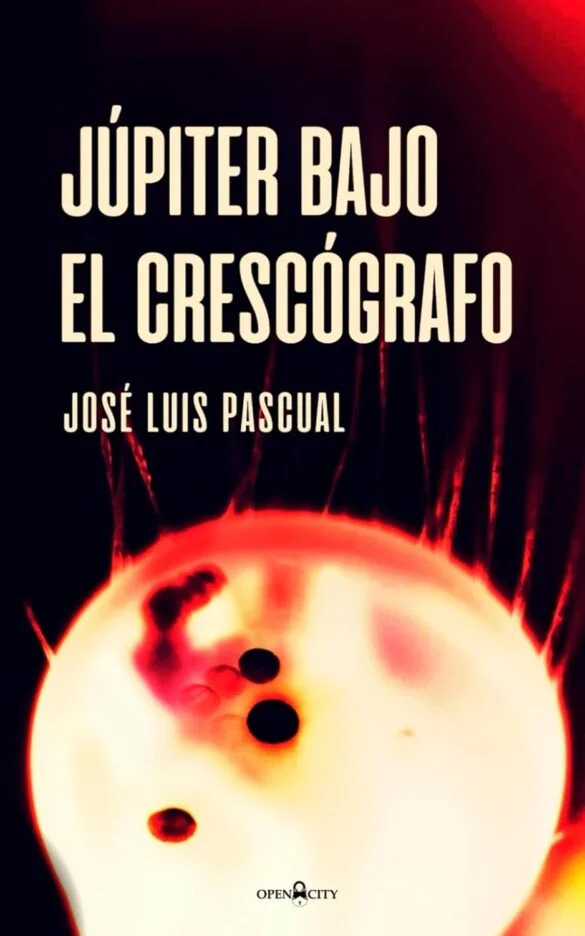
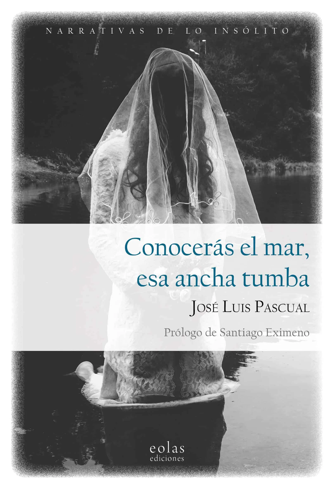
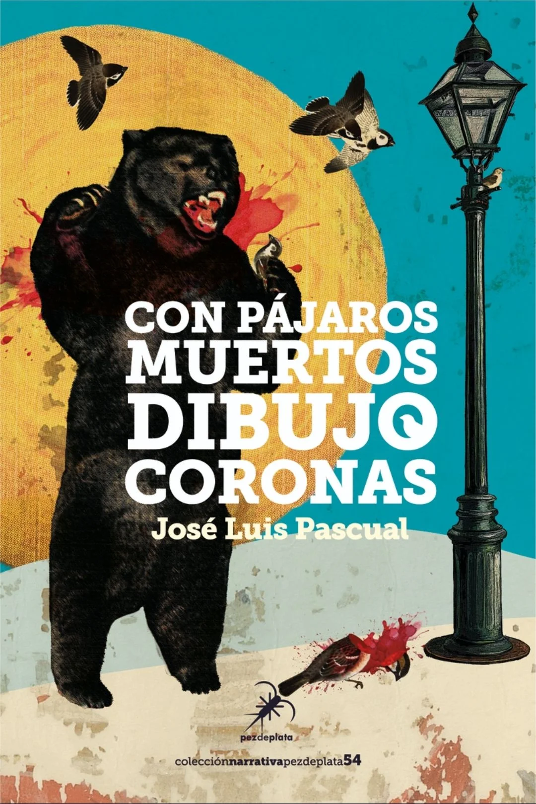

✍️
Corrección Ortotipográfica y de Estilo
Revisión exhaustiva según normas de la RAE, puntuación en diálogos, recursos tipográficos y eliminación de repeticiones o verbos comodines.
Orbitando desde 2014 • Cultura popular, literatura y terror
Servicios editoriales profesionales para llevar tu proyecto literario al siguiente nivel.
Corrección • Informes de lectura • Asesoramiento
Editoriales y proyectos de colaboración
¿Qué te puedo ofrecer?
Revisión exhaustiva según normas de la RAE, puntuación en diálogos, recursos tipográficos y eliminación de repeticiones o verbos comodines.
Análisis y valoración técnica y literaria de tu obra para identificar puntos fuertes y aspectos a perfeccionar.
Redacción de materiales de presentación, síntesis y promoción profesional para editoriales y medios de comunicación.
Acompañamiento personalizado en el desarrollo y la búsqueda de la excelencia para tus proyectos literarios.
Presupuesto y Prueba Gratuita
Escríbeme por correo electrónico para hacerme llegar tu propuesta o consultar cualquier duda.
Realizo la corrección de dos páginas centrales de tu texto para evaluar las necesidades del proyecto.
Recibes las páginas corregidas junto a un presupuesto completo y ajustado sin compromiso.
Llevamos a cabo el trabajo de corrección y edición con total garantía de confidencialidad.
Sobre mí
Desde 2014 dirijo la revista digital Dentro del Monolito (dedicada a la crítica de literatura de género) y coordino su Club de Lectura. Soy editor y coordinador de las antologías T. Errores, formo parte de la Escuela de Imaginadores de Juan Jacinto Muñoz-Rengel y analizo relatos en Forjadores de relatos.
Poseo el Certificado de Profesionalidad ARGN0210 'ASISTENCIA A LA EDICIÓN' (Nivel 3) y he trabajado como corrector editorial de las novelas El verdor de las estatuas de Jesús Gordillo y Reina en un castillo sin rey de Ana Vivancos (Apache Libros). Asimismo, soy autor de obras como Júpiter bajo el crescógrafo y Conocerás el mar, esa ancha tumba.
Mis libros

Aquí se esconde un compendio de textos alienígenas e indescifrables, una guía de viaje hacia el absurdo y el surrealismo más excesivo..

Leed estos relatos como si estuvierais contemplando los almendros y hubieran florecido en carne podrida y sangre negra. Dejaos llevar, permitid que os empapen de su extrañeza. No tratéis de descifrarlos, ellos os contarán su verdad si se lo permitís. Abrazad lo extraño.

La soledad, el olvido y la locura protagonizan estos cantos entonados a gritos. Completa tu realidad con la sombra que arrojan las páginas de esta obra. Huye del oso y de los rugidos que encuentran eco en los gorriones.
Consulta dudas o pide presupuesto